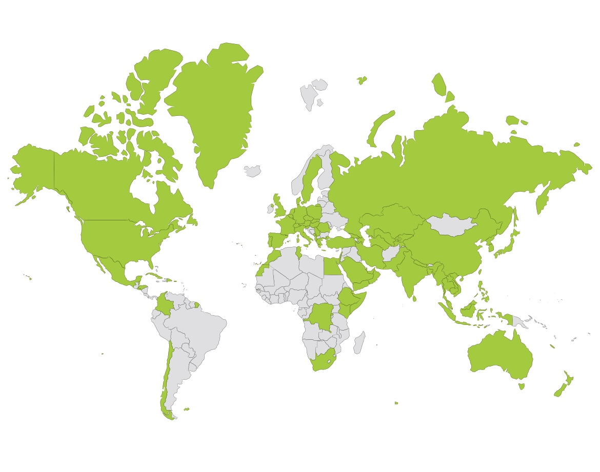

🌍 Welcome to My Travel World
A passionate explorer who's traveled to 90 countries without quitting my job. From hiking in the Andes to diving in the Caribbean, skiing in the Alps to camping under Saharan stars, I've built this site to share stories, tips, and gear recommendations for travelers who want more adventure, less hassle.
🗺️ Where I've Been (by Continent)
Europe (20+ countries)
Spain, France, Italy, Switzerland, Germany, Netherlands, Greece, Portugal, Sweden, Poland, Austria, Belgium, Denmark, Finland, Ireland, Norway, Czech Republic, Hungary, Croatia, Slovenia
Asia (20+ countries)
Japan, Thailand, Nepal, Vietnam, China, India, Malaysia, Indonesia, Philippines, South Korea, Singapore, Cambodia, Laos, Myanmar, Taiwan, Mongolia, Bangladesh, Sri Lanka, Bhutan, Maldives
North America (15+ countries)
Mexico, Belize, Honduras, El Salvador, USA, Canada, Cuba, Jamaica, Bahamas, Panama, Costa Rica, Guatemala, Nicaragua, Dominican Republic, Haiti
South America (10+ countries)
Colombia, Chile, Brazil, Argentina, Peru, Bolivia, Ecuador, Uruguay, Venezuela, Paraguay
Africa (10+ countries)
Morocco, Kenya, South Africa, Egypt, Tunisia, Congo, Tanzania, Namibia, Ghana, Senegal
Oceania (5+ countries)
Australia, New Zealand, Fiji, Samoa, Papua New Guinea
Over 90 countries visited worldwide.

🔥 What I Love Doing
- 🏔 Hiking: From Home to the Himalayas
- 🏕 Camping: Remote escapes under the stars
- 🤿 Diving: Coral reefs, cenotes, shipwrecks
- 🎿 Skiing: Alps, Rockies, and off-the-grid slopes
🌊 Popular Snorkeling & Diving Spots (By Continent)
- Caribbean & Central America: Roatán (Honduras), Belize Barrier Reef, Cozumel (Mexico), Bonaire
- Asia-Pacific: Raja Ampat (Indonesia), Palawan & Apo Island (Philippines), Great Barrier Reef (Australia), Maldives
- Europe: Azores (Portugal), Malta, Canary Islands (Spain), Greece’s Mediterranean spots
- Africa: Red Sea (Egypt), Mauritius, Seychelles
Each region offers unique marine biodiversity, from coral walls and wrecks to shark encounters and vibrant reef life.
Before You Go
Don’t forget mobile data while traveling! I recommend Airalo, a trusted global eSIM provider that lets you stay connected in over 190 countries—no physical SIM card needed. Use code ENFYS3246 at checkout to get €3 off your first eSIM!
🎒 Recommended Gear for Diving & Snorkeling
- Quality mask & snorkel set (anti-fog & tempered glass)
- Wetsuit (3mm for warm waters, 5mm+ for cooler regions)
- Fins with comfortable fit and good propulsion
- Dive computer or waterproof watch
- Underwater camera or GoPro for capturing memories
- Surface marker buoy (SMB) for safety
✨ Start Exploring
Head over to the activity pages above, or explore destination guides for unique itineraries, personal tips, and gear I use on the road.